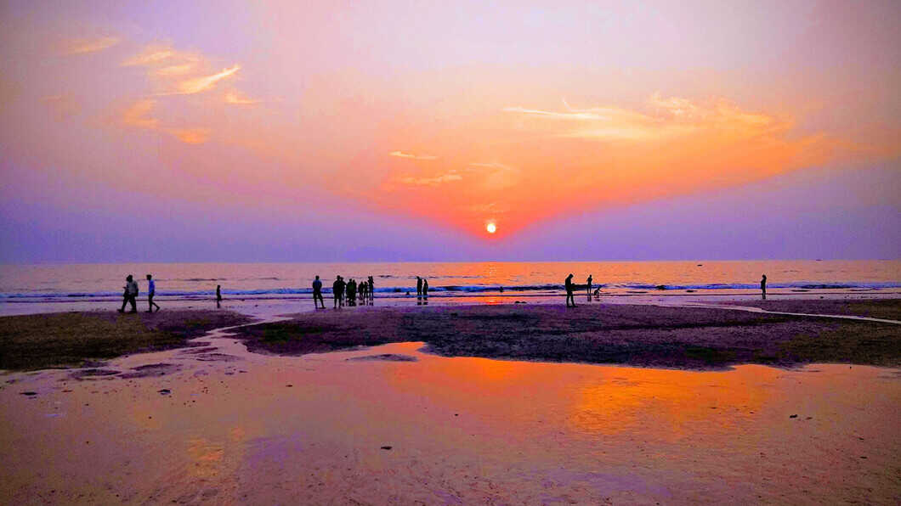

1. Hotel Taj Palace

The Taj Mahal Palace is a heritage, five-star, luxury hotel in the
Colaba area of Mumbai, Maharashtra, India, situated next to the
Gateway of India. Built in the Indo-Saracenic style, it opened in 1903
as the Taj Mahal Hotel and has historically often been known simply as
"The Taj". The hotel is named after the Taj Mahal, which is located in
the city of Agra approximately 1,050 kilometres (650 mi) from Mumbai.
2. Gateway Of India

The Gateway of India is an arch-monument completed in 1924 on the
waterfront of Mumbai (Bombay), India. It was erected to commemorate
the landing of George V for his coronation as the Emperor of India in
December 1911 at Strand Road near Wellington Fountain. He was the
first British monarch to visit India. The foundation stone was laid in
March 1913 for a monument built in the Indo-Islamic style, inspired by
elements of 16th-century Gujarati architecture. The final design of
the monument by architect George Wittet was sanctioned only in 1914,
and construction was completed in 1924. The structure is a memorial
arch made of basalt, which is 26 metres (85 feet) high, with an
architectural resemblance to a triumphial arch as well as Gujarati
architecture of the time.
3. Marine Drive

Marine Drive is a 3 kilometre-long Promenade along the Netaji Subhash
Chandra Bose Road in Mumbai, India. The road and promenade were
constructed by Pallonji Mistry. It is a banana-shaped, six-lane
concrete road along the coast of a natural bay. At the northern end of
Marine Drive is Girgaon Chowpatty and the adjacent road along links
Nariman Point at southern tip to Babulnath and Malabar Hill at
northern tip. Marine Drive is situated on reclaimed land facing
west-south-west. Marine Drive is also known as the Queen's Necklace
because, when viewed at night from an elevated point anywhere along
the drive, the street lights resemble a string of pearls in a necklace
4. Juhu Beach

It is the most popular beach of Mumbai . It lies about 25 km from the
city centre. The marvelous beach lined by bungalows offers various
entertainment and amusement facilities. Juhu Beach is one of the most
famous beaches in Mumbai . It may be accessed from the suburbs of Vile
Parle , Santacruz and Andheri. Many tourists make it a point to visit
the beach when they come to Mumbai, as it is a relatively uncrowded
free space in the city, although it does get crowded in the evenings
and weekends.
5. Alephenta-caves

The Elephanta Caves are a coldiv of cave temples predominantly
dedicated to the Hindu god Shiva, which have been designated a UNESCO
World Heritage Site.They are on Elephanta Island, or Gharapuri
(literally meaning "the city of caves"), in Mumbai Harbour, 10
kilometres (6.2 mi) east of Mumbai in the Indian state of Mahārāshtra.
The island, about 2 kilometres (1.2 mi) west of the Jawaharlal Nehru
Port, consists of five Hindu caves, a few Buddhist stupa mounds that
date back to the 2nd century BCE, and two Buddhist caves with water
tanks.
6. Chhatrapati Shivaji Terminus Railway Station

Chhatrapati Shivaji Terminus (officially Chhatrapati Shivaji Maharaj
Terminus since 2017, formerly Victoria Terminus, Bombay station code:
CSMT (mainline)(suburban)), is a historic railway terminus and UNESCO
World Heritage Site in Mumbai, Maharashtra, India. The terminus was
designed by a British architectural engineer Frederick William Stevens
from an initial design by Axel Haig, in an exuberant Italian Gothic
style. Its construction began in 1878, in a location south of the old
Bori Bunder railway station, and was completed in 1887, the year
marking 50 years of Queen Victoria's rule.